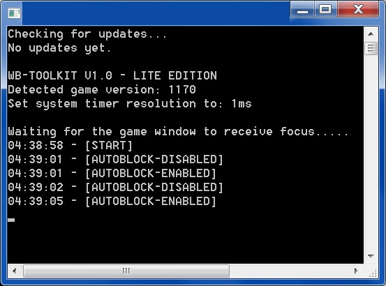
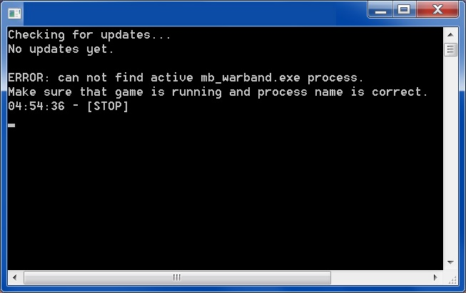

DOWNLOAD v2.0b (1.70 MB): WB-Toolkit-Lite_v2.zip
PREVIOUS VERSIONS (OUTDATED)
DOWNLOAD v1.0 (1.71 MB): WB-Toolkit-Lite_v1.zipDOWNLOAD v2.0 (1.70 MB): WB-Toolkit-Lite_v2.zip
If your game version doesn't work with it - download the latest version's exe (2.42 MB): mb_warband.exe (replace old ".exe" in the game root folder with this one)
Or the latest version patch from Taleworlds (315 MB): mb_warband_upgrade_1100_to_1174.exe
VIDEO:
Show/hide
ADVANCED CAMERA DEMO

AUTOBLOCK DEMO

SCREENSHOTS:
Show/hide
 HOW TO USE AUTOBLOCK:
1. Start "mb_warband.exe" (make sure that name is correct) as administrator and wait for the game get full loaded;
2. Make sure that "control block direction" in options is set to "Automatic";
3. Run "WB-Toolkit-Lite.exe" as administrator (it is necessary because the program hacks the game process memory for autoblock activation);
4. Join any server;
5. Click the "Caps Lock" button to enable/disable autoblock;
6. To use the autoblock just hold the right mouse button.
ADVANCED CAMERA MODE:
You can turn camera to any angle up and down. Zoom-in mode, zoom-out mode and 3rd person camera distance can be adjusted to any value.
Click "F4" key to enable advanced camera (when you are on server);
To enable zoom-in mode hold "Left Shift" key and "Right Mouse Button";
To enable zoom-out mode hold "Left Control" key and "Right Mouse Button";
To change 3rd person camera distance hold "+" or "-" keys.
FOG DISABLE FEATURE:
To disable fog on any map just click "F5" key.
FAQ:
Show/hide
Q: Does it work for the module "xxx"?A: It should work for any module but was tested only for Native and NW.
Q: Is it a virus?
A: It is not a virus but because it is an executable hack some antiviruses may warn you about the danger.